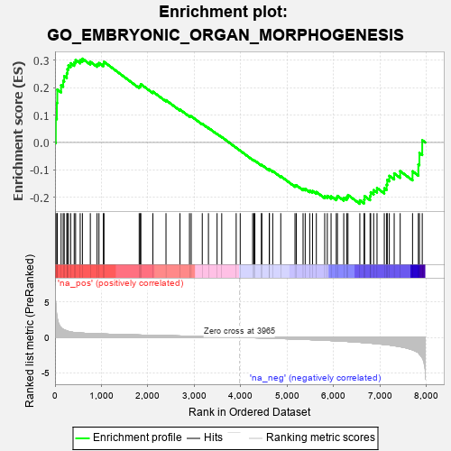
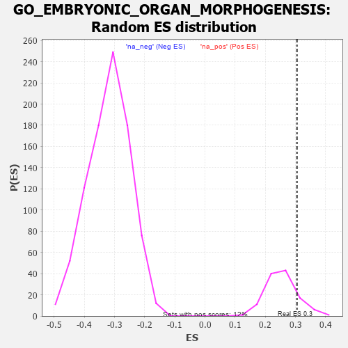

| | | Dataset | 7d |
| Phenotype | NoPhenotypeAvailable |
| Upregulated in class | na_pos |
| GeneSet | GO_EMBRYONIC_ORGAN_MORPHOGENESIS |
| Enrichment Score (ES) | 0.30514258 |
| Normalized Enrichment Score (NES) | 1.2145071 |
| Nominal p-value | 0.11764706 |
| FDR q-value | 0.47603175 |
| FWER p-Value | 1.0 |
Table: GSEA Results Summary

Fig 1: Enrichment plot: GO_EMBRYONIC_ORGAN_MORPHOGENESIS
Profile of the Running ES Score & Positions of GeneSet Members on the Rank Ordered List
| PROBE | GENE SYMBOL | GENE_TITLE | RANK IN GENE LIST | RANK METRIC SCORE | RUNNING ES | CORE ENRICHMENT | | 1 | HMX3 | | | 17 | 4.775 | 0.0875 | Yes |
| 2 | SIX2 | | | 40 | 3.152 | 0.1438 | Yes |
| 3 | TGFB3 | | | 49 | 2.654 | 0.1926 | Yes |
| 4 | SP3 | | | 131 | 1.391 | 0.2084 | Yes |
| 5 | FOXF1 | | | 176 | 1.136 | 0.2242 | Yes |
| 6 | WNT16 | | | 198 | 1.072 | 0.2417 | Yes |
| 7 | LBX1 | | | 254 | 0.929 | 0.2521 | Yes |
| 8 | TBX20 | | | 267 | 0.880 | 0.2671 | Yes |
| 9 | SHOX2 | | | 288 | 0.842 | 0.2804 | Yes |
| 10 | DLL1 | | | 337 | 0.760 | 0.2886 | Yes |
| 11 | ALX4 | | | 413 | 0.686 | 0.2919 | Yes |
| 12 | SUFU | | | 443 | 0.665 | 0.3007 | Yes |
| 13 | SRF | | | 542 | 0.615 | 0.2999 | Yes |
| 14 | ALX1 | | | 590 | 0.598 | 0.3051 | Yes |
| 15 | ZIC3 | | | 760 | 0.542 | 0.2939 | No |
| 16 | STOX1 | | | 905 | 0.506 | 0.2852 | No |
| 17 | LRIG1 | | | 946 | 0.497 | 0.2894 | No |
| 18 | YAP1 | | | 1041 | 0.475 | 0.2864 | No |
| 19 | MEF2C | | | 1054 | 0.473 | 0.2938 | No |
| 20 | ABR | | | 1812 | 0.335 | 0.2042 | No |
| 21 | GATA4 | | | 1837 | 0.330 | 0.2074 | No |
| 22 | TCF7 | | | 1848 | 0.328 | 0.2123 | No |
| 23 | BMP7 | | | 2107 | 0.290 | 0.1851 | No |
| 24 | HIPK2 | | | 2389 | 0.247 | 0.1541 | No |
| 25 | KDM6A | | | 2690 | 0.200 | 0.1199 | No |
| 26 | FGFR2 | | | 2895 | 0.167 | 0.0972 | No |
| 27 | ACVR1 | | | 2932 | 0.161 | 0.0957 | No |
| 28 | PAX6 | | | 3170 | 0.127 | 0.0680 | No |
| 29 | SMAD3 | | | 3303 | 0.105 | 0.0533 | No |
| 30 | GLI1 | | | 3489 | 0.079 | 0.0314 | No |
| 31 | MAPK3 | | | 3589 | 0.062 | 0.0200 | No |
| 32 | NIPBL | | | 3900 | 0.010 | -0.0191 | No |
| 33 | EYA1 | | | 3987 | -0.006 | -0.0299 | No |
| 34 | PAX5 | | | 4255 | -0.051 | -0.0627 | No |
| 35 | WNT11 | | | 4282 | -0.056 | -0.0650 | No |
| 36 | TBX2 | | | 4303 | -0.060 | -0.0664 | No |
| 37 | SETD2 | | | 4443 | -0.084 | -0.0824 | No |
| 38 | KCNQ4 | | | 4452 | -0.085 | -0.0818 | No |
| 39 | GATA3 | | | 4614 | -0.120 | -0.0999 | No |
| 40 | ATOH1 | | | 4615 | -0.121 | -0.0977 | No |
| 41 | PTK7 | | | 4687 | -0.136 | -0.1041 | No |
| 42 | DLG1 | | | 4860 | -0.169 | -0.1227 | No |
| 43 | TBX1 | | | 5166 | -0.241 | -0.1568 | No |
| 44 | SMO | | | 5195 | -0.247 | -0.1557 | No |
| 45 | TCF21 | | | 5340 | -0.283 | -0.1686 | No |
| 46 | FZD5 | | | 5386 | -0.292 | -0.1689 | No |
| 47 | STIL | | | 5483 | -0.314 | -0.1751 | No |
| 48 | FGFR1 | | | 5543 | -0.332 | -0.1764 | No |
| 49 | ROR2 | | | 5626 | -0.353 | -0.1801 | No |
| 50 | BBS4 | | | 5806 | -0.407 | -0.1951 | No |
| 51 | BBS5 | | | 5862 | -0.421 | -0.1942 | No |
| 52 | PCGF2 | | | 5943 | -0.451 | -0.1959 | No |
| 53 | LRIG3 | | | 6055 | -0.492 | -0.2007 | No |
| 54 | FBN1 | | | 6080 | -0.499 | -0.1944 | No |
| 55 | SMAD2 | | | 6216 | -0.541 | -0.2013 | No |
| 56 | IFT52 | | | 6280 | -0.566 | -0.1987 | No |
| 57 | IFT57 | | | 6307 | -0.579 | -0.1911 | No |
| 58 | OTOP1 | | | 6562 | -0.690 | -0.2103 | No |
| 59 | USH1G | | | 6654 | -0.740 | -0.2080 | No |
| 60 | TMED2 | | | 6665 | -0.746 | -0.1952 | No |
| 61 | C2CD3 | | | 6783 | -0.802 | -0.1950 | No |
| 62 | WDR19 | | | 6796 | -0.812 | -0.1813 | No |
| 63 | AHI1 | | | 6860 | -0.848 | -0.1733 | No |
| 64 | MIB1 | | | 6932 | -0.890 | -0.1656 | No |
| 65 | BBS7 | | | 7089 | -0.988 | -0.1668 | No |
| 66 | WHRN | | | 7139 | -1.025 | -0.1538 | No |
| 67 | WDR60 | | | 7153 | -1.038 | -0.1360 | No |
| 68 | OVOL2 | | | 7197 | -1.068 | -0.1214 | No |
| 69 | MYO7A | | | 7302 | -1.175 | -0.1125 | No |
| 70 | LHX1 | | | 7431 | -1.305 | -0.1042 | No |
| 71 | MYO6 | | | 7697 | -1.753 | -0.1049 | No |
| 72 | PKD2 | | | 7822 | -2.167 | -0.0799 | No |
| 73 | DLX5 | | | 7845 | -2.378 | -0.0381 | No |
| 74 | FBN2 | | | 7906 | -2.873 | 0.0082 | No |
Table: GSEA details [plain text format]

Fig 2: GO_EMBRYONIC_ORGAN_MORPHOGENESIS: Random ES distribution
Gene set null distribution of ES for GO_EMBRYONIC_ORGAN_MORPHOGENESIS